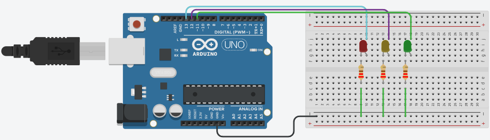
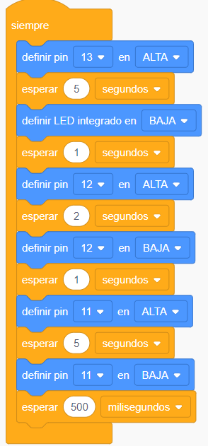

Semáforo
Objetivo: Usar y crear un circuito que simule el funcionamiento de un semáforo utilizando un Arduino UNO y LEDs de diferentes colores.
Instrucciones para los estudiantes:
Accede a Tinkercad:
En el panel principal, selecciona la opción "Circuits" (Circuitos) y luego "Crear nuevo circuito".
Componentes necesarios:
3 LEDs (rojo, amarillo y verde)
3 resistencias de 220Ω
1 Arduino UNO
Cables de conexión
Diseño y conexión de componentes:
- Coloca los 3 LEDs (rojo, amarillo, verde) en el espacio de trabajo.
- Conecta el ánodo del LED rojo al pin digital 13 del Arduino y el cátodo a una resistencia de 220Ω. La otra terminal de la resistencia conéctala al GND (tierra).
- Conecta el LED amarillo al pin digital 12 y el LED verde al pin digital 11, siguiendo el mismo procedimiento con resistencias y tierra.
Haz clic en la pestaña "Code" en la esquina superior derecha.
Se puede programar por "Blocks" o "Text".
Solución de la Práctica
| Software | |||
| Tinkercad | Explicación | Código por bloques | Código por texto c++ |
|  |
|
 |
void setup() { void loop() { |